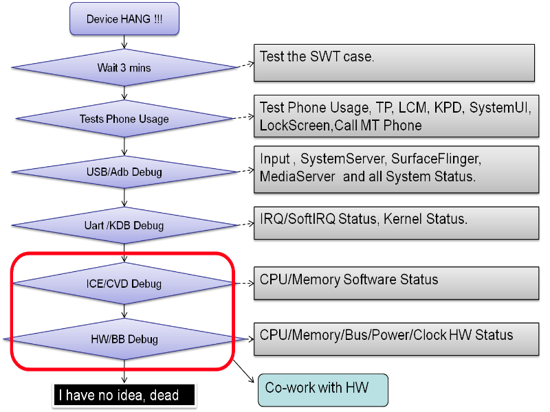

Quick Start
死机问题快速分析
-
1死机现象
-
2可能导致死机的原因
-
3死机分析数据
-
4Backtrace 分析
-
5系统运行环境分析
-
6进程运行环境分析
-
7死机问题场景
-
8死机现场分析
-
9无现场猜测与分析
-
10死机资讯抓取
-
11死机与重启的关系
-
12经典案例
-
13附录
死机问题
死机分析资讯与工具
死机分析流程
死机与重启的关系
经典案例
附录
1. 死机现场分析手法
死机分析如同医生给病人诊断病情，所有的手法不在乎分为两种。
* 高科技的诊断设备，分析病人的病情。死机分析 就依靠各种技术方法去诊断当时手机的运行的真实状态。
* 通过病人的各种活动，分析病人的潜在病因。 就依靠各种对手机的操作，以及命令，让手机跑相应的流程，从而进一步分析。
2. 基本分析流程

下面我们将针对每一个流程进行具体的说明.
3. Test Phone Usage
* 通过做一些基本的测试, 可大体上确认可能引发死机的模块, 为后续Debug 确定好方向。
* 通常用于QA 发现hang 机时，或者让客户进行初步的确认。
* 通常只能正向推理，可以做什么 =》推断什么模块正常；逆向推理可能因为各种原因而失常。
* 通过做一些基本的测试, 可大体上确认可能引发死机的模块, 为后续Debug 确定好方向。
* 通常用于QA 发现hang 机时，或者让客户进行初步的确认。
* 通常只能正向推理，可以做什么 =》推断什么模块正常；逆向推理可能因为各种原因而失常。
* Touch Panel
- 屏幕是否有响应(一般情况下没响应 ^_^).
- 如果有响应，可能机器已经活过来了，或者客户当时把ANR 认为了hang 机；需要进一步和客户确认情况.
- 确认虚拟按键的情况，通常都设定振动反馈, 如果有, 那么就认为当时按键资讯可以传递到System Server, 此时可能System Server 逻辑异常.
* Power Key/ Volumn Up/Down Key
- 是否可以点亮，关闭屏幕(注意最好关灯测试，不然背光可能观测不到)
- 可点亮关闭屏幕，说明KPD ->input manager->PowerManagerService->Power->LCD driver 正常；通常可以怀疑TPD， 以及SurfaceFlinger.
- 屏幕是否有响应(一般情况下没响应 ^_^).
- 如果有响应，可能机器已经活过来了，或者客户当时把ANR 认为了hang 机；需要进一步和客户确认情况.
- 确认虚拟按键的情况，通常都设定振动反馈, 如果有, 那么就认为当时按键资讯可以传递到System Server, 此时可能System Server 逻辑异常.
* Power Key/ Volumn Up/Down Key
- 是否可以点亮，关闭屏幕(注意最好关灯测试，不然背光可能观测不到)
- 可点亮关闭屏幕，说明KPD ->input manager->PowerManagerService->Power->LCD driver 正常；通常可以怀疑TPD， 以及SurfaceFlinger.
* 是否可以显示音量调整情况
- 可显示音量调整情况，进一步说明SurfaceFlinger 也正常，进一步怀疑TPD，或者直接的APP 无响应的情况。
- 可显示音量调整情况，进一步说明SurfaceFlinger 也正常，进一步怀疑TPD，或者直接的APP 无响应的情况。
* SystemUI & Status Bar
- Status Bar 是否可以拉下，以便防止只是活动区卡住的情况, 可下拉，说明只是APP 卡住，或者lockscreen 无法解锁的清理。
- Status Bar 是否可以拉下，以便防止只是活动区卡住的情况, 可下拉，说明只是APP 卡住，或者lockscreen 无法解锁的清理。
* LockScreen & Call MT Phone
- 测试LockScreen 是否可以解锁，
- 测试modem 是否已经关闭
- 可进入电话界面，说明是lockscreen 无法解锁的情况
* Home Key/ Back Key/Search Key
- 确认当时是否只是APP hang 住的情况，避免将ANR 误判为hang 机
- 测试LockScreen 是否可以解锁，
- 测试modem 是否已经关闭
- 可进入电话界面，说明是lockscreen 无法解锁的情况
* Home Key/ Back Key/Search Key
- 确认当时是否只是APP hang 住的情况，避免将ANR 误判为hang 机
* 插入USB 观察充电情况
- 可确认Surfaceflinger, System Server 的运行情况
- 可确认Surfaceflinger, System Server 的运行情况
4. USB/ADB Debug Hang
整体的分析流程如下图.

4.1 USB/ADB Debug 准备
* 插入USB， 确认ADB 是否可以使用
- 首先查看windows 的设备管理器里面是否出现对应的设备
- 在命令行中输入adb devices, 看是否可以打印设备信息，在输入之前您最好先输入adb kill-server 保证pc 上的adb client 没有卡住
- 请确保您使用的PC 上已经安装ADB，USB 端口本身正常
- 首先查看windows 的设备管理器里面是否出现对应的设备
- 在命令行中输入adb devices, 看是否可以打印设备信息，在输入之前您最好先输入adb kill-server 保证pc 上的adb client 没有卡住
- 请确保您使用的PC 上已经安装ADB，USB 端口本身正常
* 正常的ADB 连接情况如下图

* 正常adb devices 查看结果如下图

4.2 USB/ADB 连接分析
* Case1: adb 能正常连接，adb shell #
- 恭喜您adb 目前可以正常接入，可以进行USB/ADB Debug
- 恭喜您adb 目前可以正常接入，可以进行USB/ADB Debug
* Case2: windows 设备管理器有反映，adb shell 提示device not found.
- 确认adb 驱动是否安装好，USB 的uid 和 vid 是否和driver 匹配。
- 可能机器的adbd 已经无法对接，尝试adb kill-server 来确认
- 确认adb 驱动是否安装好，USB 的uid 和 vid 是否和driver 匹配。
- 可能机器的adbd 已经无法对接，尝试adb kill-server 来确认
* Case3: windows 设备管理器有反映，adb shell 提示offline.
- 机器的adbd 拒绝连接，或者adbd 无法拉起。
- PC adb 版本过低
- 很可能adbd 已经卡住, adbd process status 为 ‘D’
- 机器的adbd 拒绝连接，或者adbd 无法拉起。
- PC adb 版本过低
- 很可能adbd 已经卡住, adbd process status 为 ‘D’
* Case4: RSA 指纹认证无法通过
- 需要手机确认PC RSA 指纹
- 需要手机确认PC RSA 指纹
4.3 机器状态基本检测
* ps or ps -t or ps -t -p查看进程基本状态
-t 以线程为单位打印
-p 附加打印线程优先级信息
** 追查如system server, surfaceflinger, service manager, media server(ss, sf, sm, ms)，zygote，等关键进程的状态，进行初步确认。正常情况下，都应处于’S’， 异常情况有如’D’, ‘T’, ‘Z’ , ‘R’等
* ps or ps -t or ps -t -p查看进程基本状态
-t 以线程为单位打印
-p 附加打印线程优先级信息
** 追查如system server, surfaceflinger, service manager, media server(ss, sf, sm, ms)，zygote，等关键进程的状态，进行初步确认。正常情况下，都应处于’S’， 异常情况有如’D’, ‘T’, ‘Z’ , ‘R’等
** 大体追查ss, sf, sm, ms, zygote 等的memory rss 情况，是否有明显的溢出情况
** 大体查看当时的ss pid, sf pid，在ICS 上如果机器上层没有重启过，通常sf pid < 200, ss pid < 600，如果pid 比较大就说明上层重启过。
** 是否还存在特别进程，如ipod, 表示在ipo 关机中，如aee_core_forworder, 表示在抓core dump，aee_dumpstate 表示aee 在抓取db 信息等。
** 追查debuggerd 的process 数量，通常正常时 ，只有一个debuggerd process , pid < 200, 如果有达到4个debuggerd，这个时候将无法进行rtt 之类的操作
* df
- 审查storage 的使用情况，查看SD 卡和 data 分区使用情况，特别是如SD 卡已满，或者data 分区写满等。
- 审查storage 的使用情况，查看SD 卡和 data 分区使用情况，特别是如SD 卡已满，或者data 分区写满等。
* cat proc/meminfo， procrank
- 审查当前的memory 使用情况， 追查各个进程的memory 情况
- 审查当前的memory 使用情况， 追查各个进程的memory 情况
* getprop
- 审查当前system properties 情况
- 审查当前system properties 情况
* top -t -m 5 -n 2
- 摸一摸手机，感觉有点热，或者发烫的话，说明通常是CPU 利用率比较高
- 大体上审查当前CPU 的利用情况，不求精湛
- 摸一摸手机，感觉有点热，或者发烫的话，说明通常是CPU 利用率比较高
- 大体上审查当前CPU 的利用情况，不求精湛
总之，机器状态基本检测，目标就是通过简单几个命令直接侦测当前手机最为可能的异常情况。包括关键进程基本状态， CPU 利用率，memory 状况，storage 状况等。做出基本的预先分析，从而为下一步的debug 打好基础。

4.4 确认hang机的module
我们又回到了最开始的可能影响hang 的那些modules, 下面我们将针对每一个module 做详细的说明.
4.4.1 Input Driver-Input System
* 确认Input Driver-Input System 通路是否正常，即input driver 是否可以传上正常的输入
* 最常见的检测方式是 adb shell getevent
* 确认Input Driver-Input System 通路是否正常，即input driver 是否可以传上正常的输入
* 最常见的检测方式是 adb shell getevent
如直接输入adb shell getevent 可以看到:
C:\Users\mtk71029\Desktop>adb shell getevent
add device 1: /dev/input/event0
name: "mtk-kpd"
could not get driver version for /dev/input/mouse0, Not a typewriter
add device 2: /dev/input/event3
name: "mtk-tpd"
add device 3: /dev/input/event2
name: "hwmdata"
add device 4: /dev/input/event1
name: "ACCDET"
could not get driver version for /dev/input/mice, Not a typewriter
add device 1: /dev/input/event0
name: "mtk-kpd"
could not get driver version for /dev/input/mouse0, Not a typewriter
add device 2: /dev/input/event3
name: "mtk-tpd"
add device 3: /dev/input/event2
name: "hwmdata"
add device 4: /dev/input/event1
name: "ACCDET"
could not get driver version for /dev/input/mice, Not a typewriter
对应的操作命令是:
Usage: getevent [-t] [-n] [-s switchmask] [-S] [-v [mask]] [-d] [-p] [-i] [-l] [-q] [-c count] [-r] [device]
-t: show time stamps
-n: don't print newlines
-s: print switch states for given bits
-S: print all switch states
-v: verbosity mask (errs=1, dev=2, name=4, info=8, vers=16, pos. events=32, props=64)
-d: show HID descriptor, if available
-p: show possible events (errs, dev, name, pos. events)
-i: show all device info and possible events
-l: label event types and names in plain text
-q: quiet (clear verbosity mask)
-c: print given number of events then exit
-r: print rate events are received
Usage: getevent [-t] [-n] [-s switchmask] [-S] [-v [mask]] [-d] [-p] [-i] [-l] [-q] [-c count] [-r] [device]
-t: show time stamps
-n: don't print newlines
-s: print switch states for given bits
-S: print all switch states
-v: verbosity mask (errs=1, dev=2, name=4, info=8, vers=16, pos. events=32, props=64)
-d: show HID descriptor, if available
-p: show possible events (errs, dev, name, pos. events)
-i: show all device info and possible events
-l: label event types and names in plain text
-q: quiet (clear verbosity mask)
-c: print given number of events then exit
-r: print rate events are received
通常我们会一项一项的确认native 层是否可以收到Kernel 传递来的input event 事件.
比如我们追查KPD 是否有效果, 按power key 可以看到相关的行为.
C:\Users\mtk71029\Desktop>adb shell getevent -t -l /dev/input/event0
[1388629316.433356] EV_KEY KEY_POWER DOWN
[1388629316.433356] EV_SYN SYN_REPORT 00000000
[1388629316.527596] EV_KEY KEY_POWER UP
[1388629316.527596] EV_SYN SYN_REPORT 00000000
[1388629317.824871] EV_KEY KEY_POWER DOWN
[1388629317.824871] EV_SYN SYN_REPORT 00000000
[1388629317.996095] EV_KEY KEY_POWER UP
[1388629317.996095] EV_SYN SYN_REPORT 00000000
[1388629319.495346] EV_KEY KEY_POWER DOWN
[1388629319.495346] EV_SYN SYN_REPORT 00000000
[1388629319.530963] EV_KEY KEY_POWER UP
[1388629319.530963] EV_SYN SYN_REPORT 00000000
比如我们追查KPD 是否有效果, 按power key 可以看到相关的行为.
C:\Users\mtk71029\Desktop>adb shell getevent -t -l /dev/input/event0
[1388629316.433356] EV_KEY KEY_POWER DOWN
[1388629316.433356] EV_SYN SYN_REPORT 00000000
[1388629316.527596] EV_KEY KEY_POWER UP
[1388629316.527596] EV_SYN SYN_REPORT 00000000
[1388629317.824871] EV_KEY KEY_POWER DOWN
[1388629317.824871] EV_SYN SYN_REPORT 00000000
[1388629317.996095] EV_KEY KEY_POWER UP
[1388629317.996095] EV_SYN SYN_REPORT 00000000
[1388629319.495346] EV_KEY KEY_POWER DOWN
[1388629319.495346] EV_SYN SYN_REPORT 00000000
[1388629319.530963] EV_KEY KEY_POWER UP
[1388629319.530963] EV_SYN SYN_REPORT 00000000
当然如果屏幕是点亮时，肯定就要快速追查tpd 以及模拟按键是否正常
C:\Users\mtk71029\Desktop>adb shell getevent -t -l /dev/input/event5
[1388629590.432516] EV_ABS ABS_MT_TOUCH_MAJOR 00000012
[1388629590.432516] EV_ABS ABS_MT_TRACKING_ID 00000000
[1388629590.432516] EV_KEY BTN_TOUCH DOWN
[1388629590.432516] EV_ABS ABS_MT_POSITION_X 000000d4
[1388629590.432516] EV_ABS ABS_MT_POSITION_Y 00000280
[1388629590.432516] EV_SYN SYN_MT_REPORT 00000000
[1388629590.432516] EV_SYN SYN_REPORT 00000000
[1388629590.496797] EV_ABS ABS_MT_TOUCH_MAJOR 00000010
[1388629590.496797] EV_ABS ABS_MT_TRACKING_ID 00000000
[1388629590.496797] EV_ABS ABS_MT_POSITION_X 000000d4
[1388629590.496797] EV_ABS ABS_MT_POSITION_Y 0000027d
[1388629590.496797] EV_SYN SYN_MT_REPORT 00000000
[1388629590.496797] EV_SYN SYN_REPORT 00000000
[1388629590.506985] EV_ABS ABS_MT_TOUCH_MAJOR 00000010
[1388629590.506985] EV_ABS ABS_MT_TRACKING_ID 00000000
[1388629590.506985] EV_ABS ABS_MT_POSITION_X 000000d3
[1388629590.506985] EV_ABS ABS_MT_POSITION_Y 0000027a
[1388629590.506985] EV_SYN SYN_MT_REPORT 00000000
[1388629590.506985] EV_SYN SYN_REPORT 00000000
[1388629590.517713] EV_KEY BTN_TOUCH UP
[1388629590.517713] EV_SYN SYN_MT_REPORT 00000000
[1388629590.517713] EV_SYN SYN_REPORT 00000000
C:\Users\mtk71029\Desktop>adb shell getevent -t -l /dev/input/event5
[1388629590.432516] EV_ABS ABS_MT_TOUCH_MAJOR 00000012
[1388629590.432516] EV_ABS ABS_MT_TRACKING_ID 00000000
[1388629590.432516] EV_KEY BTN_TOUCH DOWN
[1388629590.432516] EV_ABS ABS_MT_POSITION_X 000000d4
[1388629590.432516] EV_ABS ABS_MT_POSITION_Y 00000280
[1388629590.432516] EV_SYN SYN_MT_REPORT 00000000
[1388629590.432516] EV_SYN SYN_REPORT 00000000
[1388629590.496797] EV_ABS ABS_MT_TOUCH_MAJOR 00000010
[1388629590.496797] EV_ABS ABS_MT_TRACKING_ID 00000000
[1388629590.496797] EV_ABS ABS_MT_POSITION_X 000000d4
[1388629590.496797] EV_ABS ABS_MT_POSITION_Y 0000027d
[1388629590.496797] EV_SYN SYN_MT_REPORT 00000000
[1388629590.496797] EV_SYN SYN_REPORT 00000000
[1388629590.506985] EV_ABS ABS_MT_TOUCH_MAJOR 00000010
[1388629590.506985] EV_ABS ABS_MT_TRACKING_ID 00000000
[1388629590.506985] EV_ABS ABS_MT_POSITION_X 000000d3
[1388629590.506985] EV_ABS ABS_MT_POSITION_Y 0000027a
[1388629590.506985] EV_SYN SYN_MT_REPORT 00000000
[1388629590.506985] EV_SYN SYN_REPORT 00000000
[1388629590.517713] EV_KEY BTN_TOUCH UP
[1388629590.517713] EV_SYN SYN_MT_REPORT 00000000
[1388629590.517713] EV_SYN SYN_REPORT 00000000
如果发现无法收到此类资讯，那么就可以确认对应的devices 可能有故障，需要请对应的driver & vendor 工程师来分析.
4.4.2 system-server logic
此分析的关键在于审查 system-server 是否还在正常的运转，这是非常重要的，据统计，40%的usb 可以debug 的hang 机问题，都可以通过对system-server 逻辑的审查找出root cause。
System server 是整个android 上层的中枢，容纳了最为重要的居多service。
对System server 的审查主要是通过java native 的backtrace 来追查System server 的关键thread 有没有被lock/dead lock，有没有进入dead loop，状态是否正常。
从Hang 机的角度来看system server 关键的thread 如:
(1). JB 以及JB 以前的版本
Serverthread:
System-server 的main looper 建立在serverthread 上，所有service 如果不单独创立thread-looper 那么都将运行在这个Server thread 上，其关键性不言而喻，用watchdog 来监测该thread.
ActivityManager:
处理所有的Activity 状态切换，broadcast ，以及ANR 监测等等，非常重要.
WindowManager:
处理各种window 叠加与切换，Input 相关处理.
WindowManagerPolicy/UI:
主要处理LockScreen 相关流程，它卡住，lockscreen 无法解锁
PowerManagerService:
处理Power 相关事宜，它卡住，屏幕无法熄灭，点亮
InputDispatcher/InputReader
处理Input System 相关事宜, 一旦他们卡住, 那么所有的Input Event 都无法反馈到其他的module, 机器死机就成必然.
(2). KK 以及KK 以后的版本
Google 取消了serverthread 这样的main looper thread, 直接使用system server 的第一个thread 作为main looper. 原本第一个thread 是加入binder thread pool, 作为binder thread 使用.
Google 对system server 的threads 做了进一步的整合，以减少繁杂的线程数, 新增了如android.io,android.ui,android.fg,android.bg 等threads. 将大量的普通型的Handler 按时效分类分散到上面的4个threads 中.
所以KK 上除追查JB 上同样的thread(server thread 除外), 还需要审查android.io, android.ui, android.fg, android.bg 等thread.
Google 取消了serverthread 这样的main looper thread, 直接使用system server 的第一个thread 作为main looper. 原本第一个thread 是加入binder thread pool, 作为binder thread 使用.
Google 对system server 的threads 做了进一步的整合，以减少繁杂的线程数, 新增了如android.io,android.ui,android.fg,android.bg 等threads. 将大量的普通型的Handler 按时效分类分散到上面的4个threads 中.
所以KK 上除追查JB 上同样的thread(server thread 除外), 还需要审查android.io, android.ui, android.fg, android.bg 等thread.
这些thread 都通过执行MQ-Looper-Handler 的模式运行，所以正常的时候的java/native backtrace 都是：
Java:
at android.os.MessageQueue.nativePollOnce(Native Method)
at android.os.MessageQueue.next(MessageQueue.java:138)
at android.os.Looper.loop(Looper.java:150)
Java:
at android.os.MessageQueue.nativePollOnce(Native Method)
at android.os.MessageQueue.next(MessageQueue.java:138)
at android.os.Looper.loop(Looper.java:150)
Native:
#00 pc 0002599c /system/lib/libc.so (epoll_wait+12)
#01 pc 000105e3 /system/lib/libutils.so (android::Looper::pollInner(int)+94)
#02 pc 00010811 /system/lib/libutils.so (android::Looper::pollOnce(int, int*, int*, void**)+92)
#03 pc 0006ca5d /system/lib/libandroid_runtime.so (android::NativeMessageQueue::pollOnce(_JNIEnv*, int)+22)
#00 pc 0002599c /system/lib/libc.so (epoll_wait+12)
#01 pc 000105e3 /system/lib/libutils.so (android::Looper::pollInner(int)+94)
#02 pc 00010811 /system/lib/libutils.so (android::Looper::pollOnce(int, int*, int*, void**)+92)
#03 pc 0006ca5d /system/lib/libandroid_runtime.so (android::NativeMessageQueue::pollOnce(_JNIEnv*, int)+22)
一旦不是就要给出所以然来.
Binder Thread
System server 为外界提供服务，绝大多数都通过binder 与其他process 对接。Binder Thread 的数量动态调整，默认不会超过16个，如果数量达到16个，即说明当前system server 可能非常繁忙，有process非常频繁的和Process 通信。
在JB 以及以前版本, System-server 的第一个thread, 在call 起serverthread 后，自己join 到IPCthread pool 中，成为Binder Thread 的一员。
对于Binder Thread, 正常时对应的Backtrace:
#00 pc 000247e8 /system/lib/libc.so (__ioctl+8)
#01 pc 00038248 /system/lib/libc.so (ioctl+28)
#02 pc 0001d3a9 /system/lib/libbinder.so (android::IPCThreadState::talkWithDriver(bool)+140)
#03 pc 0001dae3 /system/lib/libbinder.so (android::IPCThreadState::getAndExecuteCommand()+6)
#04 pc 0001db79 /system/lib/libbinder.so (android::IPCThreadState::joinThreadPool(bool)+48)
#05 pc 00021a79 /system/lib/libbinder.so
#06 pc 0000ea01 /system/lib/libutils.so (android::Thread::_threadLoop(void*)+216)
#07 pc 0004f1c9 /system/lib/libandroid_runtime.so (android::AndroidRuntime::javaThreadShell(void*)+68)
#08 pc 0000e533 /system/lib/libutils.so
#09 pc 0000d600 /system/lib/libc.so (__thread_entry+72)
at dalvik.system.NativeStart.run(Native Method)
System server 为外界提供服务，绝大多数都通过binder 与其他process 对接。Binder Thread 的数量动态调整，默认不会超过16个，如果数量达到16个，即说明当前system server 可能非常繁忙，有process非常频繁的和Process 通信。
在JB 以及以前版本, System-server 的第一个thread, 在call 起serverthread 后，自己join 到IPCthread pool 中，成为Binder Thread 的一员。
对于Binder Thread, 正常时对应的Backtrace:
#00 pc 000247e8 /system/lib/libc.so (__ioctl+8)
#01 pc 00038248 /system/lib/libc.so (ioctl+28)
#02 pc 0001d3a9 /system/lib/libbinder.so (android::IPCThreadState::talkWithDriver(bool)+140)
#03 pc 0001dae3 /system/lib/libbinder.so (android::IPCThreadState::getAndExecuteCommand()+6)
#04 pc 0001db79 /system/lib/libbinder.so (android::IPCThreadState::joinThreadPool(bool)+48)
#05 pc 00021a79 /system/lib/libbinder.so
#06 pc 0000ea01 /system/lib/libutils.so (android::Thread::_threadLoop(void*)+216)
#07 pc 0004f1c9 /system/lib/libandroid_runtime.so (android::AndroidRuntime::javaThreadShell(void*)+68)
#08 pc 0000e533 /system/lib/libutils.so
#09 pc 0000d600 /system/lib/libc.so (__thread_entry+72)
at dalvik.system.NativeStart.run(Native Method)
抓取system server 的java backtrace，依次check serverthread(JB), ActivityManager, WindowManager, WindowManagerPolicy, PowerManagerService 以及android.io, android.bg, android.fg, android.ui的状态，如状态异常，则依次推导。
当发现java backtrace 最后钻入到异常native method时，抓取其native backtace，通过native backtrace 进一步追查。
如果在native backtrace 中，发现已经call 入binder driver, 那就是通过binder 进行IPC call, 这个时候就要知道binder 的对端process, 然后查阅它的binder thread 进程进一步厘清问题.
当发现java backtrace 最后钻入到异常native method时，抓取其native backtace，通过native backtrace 进一步追查。
如果在native backtrace 中，发现已经call 入binder driver, 那就是通过binder 进行IPC call, 这个时候就要知道binder 的对端process, 然后查阅它的binder thread 进程进一步厘清问题.
Case 1: Abnormal Java Backtrace “Deadlock”
图片deadlock-java-backtrace.png
图片deadlock-java-backtrace.png

Case 2: Abnormal Java Backtrace “Lock in native thread"
图片lock-in-native-thread.png
图片lock-in-native-thread.png

Case 3: Abnormal native Backtrace “Lock in Binder”
图片lock-in-binder.png
图片lock-in-binder.png

Case 4: Abnormal native Backtrace "Lock in Binder thread"
图片lock-in-binder-thread.png
图片lock-in-binder-thread.png

当确认前面的key thread 都没用问题，而通过getevent 确认event 已经input 到system server。问题可能出在input system 中.
WindowManagerService通过InputManager提供的接口开启一个线程驱动InputReader不断地从/dev/input /目录下面的设备文件读取事件，然后通过InputDispatcher分发给连接到WindowManagerService服务的客户端。
WindowManagerService通过InputManager提供的接口开启一个线程驱动InputReader不断地从/dev/input /目录下面的设备文件读取事件，然后通过InputDispatcher分发给连接到WindowManagerService服务的客户端。
Input Reader 正常的backtrace:
"InputReader" sysTid=611
#00 pc 00027754 /system/lib/libc.so (epoll_wait+12)
#01 pc 0001f345 /system/lib/libinput.so (android::EventHub::getEvents(int, android::RawEvent*, unsigned int)+1092)
#02 pc 0002aaf7 /system/lib/libinput.so (android::InputReader::loopOnce()+142)
#03 pc 00027613 /system/lib/libinput.so (android::InputReaderThread::threadLoop()+8)
#04 pc 00015318 /system/lib/libutils.so (android::Thread::_threadLoop(void*)+492)
#05 pc 0004d12b /system/lib/libandroid_runtime.so (android::AndroidRuntime::javaThreadShell(void*)+150)
#06 pc 00014948 /system/lib/libutils.so
#07 pc 0000f66c /system/lib/libc.so (__thread_entry+80)
"InputReader" sysTid=611
#00 pc 00027754 /system/lib/libc.so (epoll_wait+12)
#01 pc 0001f345 /system/lib/libinput.so (android::EventHub::getEvents(int, android::RawEvent*, unsigned int)+1092)
#02 pc 0002aaf7 /system/lib/libinput.so (android::InputReader::loopOnce()+142)
#03 pc 00027613 /system/lib/libinput.so (android::InputReaderThread::threadLoop()+8)
#04 pc 00015318 /system/lib/libutils.so (android::Thread::_threadLoop(void*)+492)
#05 pc 0004d12b /system/lib/libandroid_runtime.so (android::AndroidRuntime::javaThreadShell(void*)+150)
#06 pc 00014948 /system/lib/libutils.so
#07 pc 0000f66c /system/lib/libc.so (__thread_entry+80)
Input Dispatcher 正常的backtrace:
"InputDispatcher" sysTid=610
#00 pc 00027754 /system/lib/libc.so (epoll_wait+12)
#01 pc 0001c05c /system/lib/libutils.so (android::Looper::pollInner(int)+140)
#02 pc 0001c3d4 /system/lib/libutils.so (android::Looper::pollOnce(int, int*, int*, void**)+76)
#03 pc 00026317 /system/lib/libinput.so (android::InputDispatcher::dispatchOnce()+94)
#04 pc 0001f5bd /system/lib/libinput.so (android::InputDispatcherThread::threadLoop()+8)
#05 pc 00015318 /system/lib/libutils.so (android::Thread::_threadLoop(void*)+492)
#06 pc 0004d12b /system/lib/libandroid_runtime.so (android::AndroidRuntime::javaThreadShell(void*)+150)
#07 pc 00014948 /system/lib/libutils.so
#08 pc 0000f66c /system/lib/libc.so (__thread_entry+80)
"InputDispatcher" sysTid=610
#00 pc 00027754 /system/lib/libc.so (epoll_wait+12)
#01 pc 0001c05c /system/lib/libutils.so (android::Looper::pollInner(int)+140)
#02 pc 0001c3d4 /system/lib/libutils.so (android::Looper::pollOnce(int, int*, int*, void**)+76)
#03 pc 00026317 /system/lib/libinput.so (android::InputDispatcher::dispatchOnce()+94)
#04 pc 0001f5bd /system/lib/libinput.so (android::InputDispatcherThread::threadLoop()+8)
#05 pc 00015318 /system/lib/libutils.so (android::Thread::_threadLoop(void*)+492)
#06 pc 0004d12b /system/lib/libandroid_runtime.so (android::AndroidRuntime::javaThreadShell(void*)+150)
#07 pc 00014948 /system/lib/libutils.so
#08 pc 0000f66c /system/lib/libc.so (__thread_entry+80)
Backtrace 通常都可以精确的定位问题点，比如卡在了哪一行。
那有没有可能您抓backtrace 时，恰好运行到，造成乌龙的情况呢？ 这个通常需要具体情况具体分析
--- Native Backtrace 处于R 状态
--- Java Backtrace 处于 Suspend 状态， Running 状态
--- Backtrace 处于明确的非block 状态
--- Double Backtrace 确认是否CPU 有运转
那有没有可能您抓backtrace 时，恰好运行到，造成乌龙的情况呢？ 这个通常需要具体情况具体分析
--- Native Backtrace 处于R 状态
--- Java Backtrace 处于 Suspend 状态， Running 状态
--- Backtrace 处于明确的非block 状态
--- Double Backtrace 确认是否CPU 有运转
随着android 版本的推进，system-server 越来越显得庞大，为此Google 对system-server 做了分拆动作。
After 4.0 SurfaceFlinger removed from system-server and created by init, single process SurfaceFlinger.
除SurfaceFlinger 外，对system-server 影响最大的是MediaServer.
After 4.0 SurfaceFlinger removed from system-server and created by init, single process SurfaceFlinger.
除SurfaceFlinger 外，对system-server 影响最大的是MediaServer.
注意对于surfaceflinger, mediaserver 等非DVM Process，切忌不要对他们send signal SIGQUIT(3), 将导致对应的process 直接退出
4.4.3 Display logic
Display Control Flow
图片: display-control-flow.png
图片: display-control-flow.png

* Surface Manager(Surfaceflinger)
** Surfaceflinger 是用户空间中ramework下libraries 中负责显示相关的一个模块
** 当系统同时执行多个应用程序时，Surfaceflinger 负责管理显示，主要包括显示的叠加和显示的渲染
** 其中显示的叠加，MTK 架构按照一定的原则和算法，主要用到GPU 和 OVL 模块的overlay 功能来做2D/3D 绘图的显示合成
** Surfaceflinger 是用户空间中ramework下libraries 中负责显示相关的一个模块
** 当系统同时执行多个应用程序时，Surfaceflinger 负责管理显示，主要包括显示的叠加和显示的渲染
** 其中显示的叠加，MTK 架构按照一定的原则和算法，主要用到GPU 和 OVL 模块的overlay 功能来做2D/3D 绘图的显示合成
* HWC
** 基于DDP OVL 硬件做HW Overlay 功能
** 基于DDP OVL 硬件做HW Overlay 功能
* GPU (Graphic Processing Unit )
** aspecialized electronic circuit designed to accelerate the image processing, frame buffer rendering for output to a display.
** aspecialized electronic circuit designed to accelerate the image processing, frame buffer rendering for output to a display.
* FrameBuffer
** 基于Linux Frame buffer 模型的MTK Framebuffer 实作，主要来管理frame buffer。
** 基于Linux Frame buffer 模型的MTK Framebuffer 实作，主要来管理frame buffer。
*DDP(Display Data Path)
** MTK Display Hardware Controller，包括OVL, DMA, Color Processor，BLS, DSI/DBI/DPI Controller
** MTK Display Hardware Controller，包括OVL, DMA, Color Processor，BLS, DSI/DBI/DPI Controller
Display Data Flow
图片: display-data-flow.jpg
图片: display-data-flow.jpg

* Display 大致的流程说明
** APP(包括WMS)会把数据透过Surface送到SF(surfaceflinger)
** SF 按照一定规则，通过GPU/HWC把多个Surface合成，并设定到DDP OVL 的对应layer
*** MTK OVL 一般有4 layer(可能不同平台会有差异，目前基本都是4 layer)，每个layer 都可以设定一个对应的图层，然后OVL 把这写图层合成后送给DDP 的下一级Module
*** 某些情况下(比如总的图层超过4个，OVL 无法处理等各种case) ，会使用GPU 去做2D/3D 的图层合成到frame buffer
** SF/HWC 最后把GPU合成图层以及需要OVL 合成的图层，设定到OVL 的HW Register，并trigger HW Engine
** MTK DDP 就会把合成的数据像管道一样流向LCM module，最后Panel 显示相关的画面
对Display 的快速分析，我们主要是两个手段, 第一个确认FrameBuffer 数据是否和理想数据一致, 第二个确认SurfaceFlinger 状态是否正确.
* 确认FrameBuffer 数据和理想数据一致, 那么说明android 上层的处理行为都是正常的, 而问题就很可能出在LCM 的driver 或者 LCM 本身问题, 此时需要联系LCM 的driver 工程师以及 LCM vendor 来确认分析, 这里不再详细说明.
* 确认FrameBuffer 数据和理想数据一致, 那么说明android 上层的处理行为都是正常的, 而问题就很可能出在LCM 的driver 或者 LCM 本身问题, 此时需要联系LCM 的driver 工程师以及 LCM vendor 来确认分析, 这里不再详细说明.
* 确认SurfaceFlinger 的状态, 用于审查SurfaceFlinger 的行为是否正常, 对应的Thread 是否能够正常工作, 我司已经在SurfaceFlinger 里面导入了Watchdog 机制, 审查SurfaceFlinger 是否有卡住的情况, 对应在main log 里面会打印如:
[SF-WD] detect SF maybe hang!!!
这样的LOG, 并且会纪录卡顿的时机，如果持续卡顿，毫无疑问, SurfaceFlinger 已经卡住，此时就要分析对应的backtrace 以及 LOG.
* SurfaceFlinger 的线程情况在不同的版本上变化比较大, 最直接的方式是审查它binder thread 情况, 以及Event Loop 的执行情况. binder thread 和 system server 情况一致, 不再详细说明. Event Loop 在JB 以及， JB 以及KK 上都不相同, 这里分别说明.
[SF-WD] detect SF maybe hang!!!
这样的LOG, 并且会纪录卡顿的时机，如果持续卡顿，毫无疑问, SurfaceFlinger 已经卡住，此时就要分析对应的backtrace 以及 LOG.
* SurfaceFlinger 的线程情况在不同的版本上变化比较大, 最直接的方式是审查它binder thread 情况, 以及Event Loop 的执行情况. binder thread 和 system server 情况一致, 不再详细说明. Event Loop 在JB 以及， JB 以及KK 上都不相同, 这里分别说明.
在JB 以前的版本, SurfaceFlinger 的Event Loop 使用的是普通的pthread 控制, 并且SurfaceFlinger 的第一个Thread 在执行SurfaceFlinger 的初始化后, 转换为了binder thread. 而Event Loop 的thread 是新起的 "SurfaceFlinger" thread. 对应的正常backtrace 是:
图片: surfaceflinger-event-loop-beforce-jb.png
图片: surfaceflinger-event-loop-beforce-jb.png

在JB 版本, SurfaceFlinger 的Event Loop 换成了Message Queue-Looper, 对应的backtrace 是:
图片: surfaceflinger-event-loop-jb.png
图片: surfaceflinger-event-loop-jb.png

在KK 版本, SurfaceFlinger 的第一个thread 直接作为了Event Loop thread, 对应的backtrace 是:
图片: surfaceflinger-event-loop-kk.png
图片: surfaceflinger-event-loop-kk.png

然后再根据SurfaceFlinger 的代码逻辑，以及backtrace 的lock 情况进行审查分析.
4.5 hang module 内部分析
当您确认了对应的module 后，通常需要拉module owner 来一起cowork.
Module owner 可能有一些独门秘籍来确认module state。通常情况下，我们可以通过dump coredump/heap dump 的方式来确认每一个module state 的state.
对于java process, 通过hprof-MAT 分析java heap 的情况进行确认.
对于native process, 通过dump coredump gdb-trace32 分析process state.
如果module 已经深入kernel 那么就必须依赖uart/kdb 来协助, 目前KDump 在客户版本中没有开启。
当您确认了对应的module 后，通常需要拉module owner 来一起cowork.
Module owner 可能有一些独门秘籍来确认module state。通常情况下，我们可以通过dump coredump/heap dump 的方式来确认每一个module state 的state.
对于java process, 通过hprof-MAT 分析java heap 的情况进行确认.
对于native process, 通过dump coredump gdb-trace32 分析process state.
如果module 已经深入kernel 那么就必须依赖uart/kdb 来协助, 目前KDump 在客户版本中没有开启。
5. UART/KDB Debug
当usb/adb 无法确认问题时或者已经无法连接时，我们需要利用UART/KDB 来进一步厘清问题。
确认UART 以及 UART Console 已经开启。
ENG 版本默认开启，User 版本默认关闭，参考相关FAQ。
在hang 机时，所有利用Uart Console 输入 的命令，务必都带 &, 转入background 运行。
原则上在adb shell 中能够输入的命令，除无法adb 特有的pull/push 命令，在UART 中一样都能够输入。
如果客户是ENG 版本，默认已经开启了KDB, 同时按住volumn UP + Down 15s 即可进入
图片: enter-kdb.png
图片: enter-kdb.png

常见的debug 命令和手法有:
*追查每一个process 的kernel backtrace
** ps; btp <pid> ; bta ; btc;
*追查每一个process 的kernel backtrace
** ps; btp <pid> ; bta ; btc;
*追查或者更新memory
** md
** mm
** md
** mm
*追查更新register
** rd
** rm
** rd
** rm
* 设置breakproint 进行debug 确认
6. JTAG Debug
如果uart 都无法吐出任何的资讯，此时可能机器HW & BUS 都有完全卡住，需要利用JTAG/CVD 来进行深入的Debug.
常见的分析有:
* 进程状态以及 Backtrace.
* MMU & CPU register.
* Mmeory 数据以及状态变化情况.
通常不到万不得已，一般不会使用JTAG/Debug 来分析。让客户接JTAG，并到我司来debug, 代价太大。
当问题涉及到HW 时，就需要大量的owner 进来一起分析，目前还没有成熟的套路来处理。
当问题涉及到HW 时，就需要大量的owner 进来一起分析，目前还没有成熟的套路来处理。